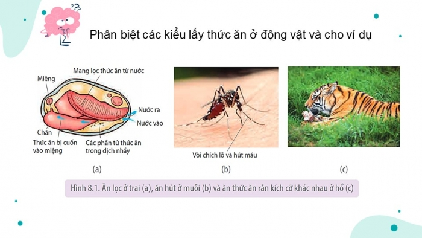
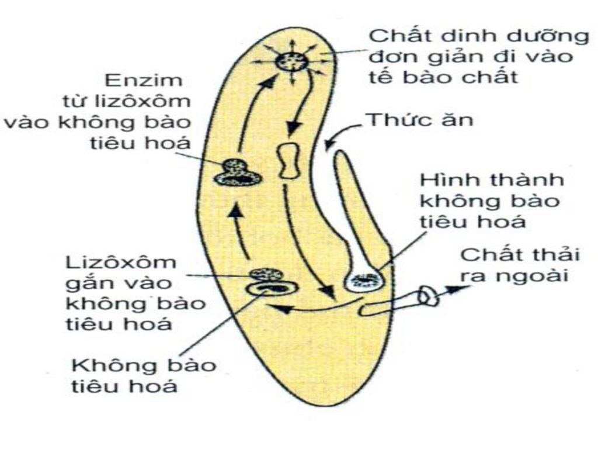
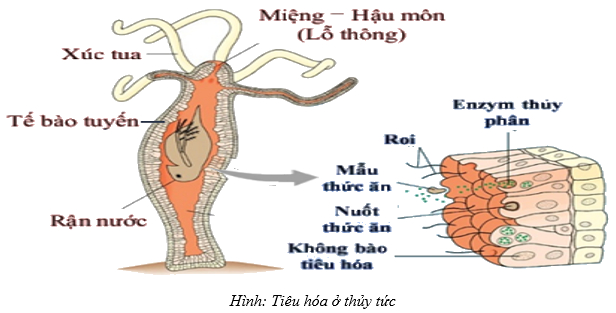
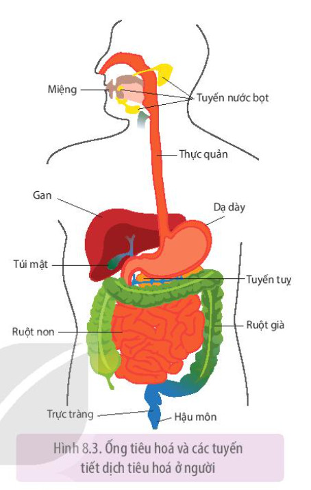
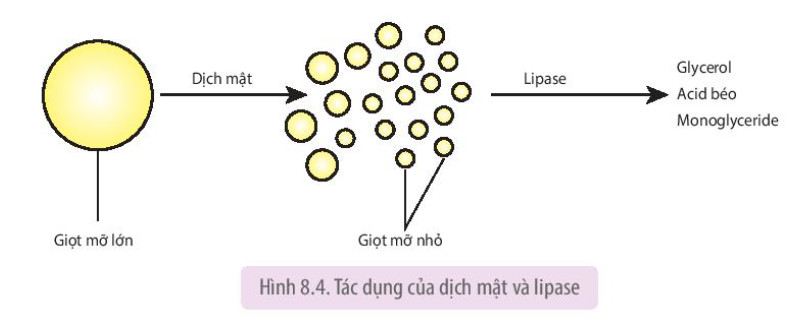

a
a. Ăn lọc
- Lọc nước qua bộ phận chuyên hoá để lấy thức ăn.
- Thức ăn thường là các sinh vật nhỏ hoặc các hạt hữu cơ trong nước.
- Ví dụ: trai, sò.
Dinh dưỡng là quá trình lấy chất dinh dưỡng cần thiết từ thức ăn và tổng hợp thành chất sống của cơ thể, bảo đảm cơ thể tồn tại và phát triển.
Quá trình dinh dưỡng gồm 4 giai đoạn:
Lấy thức ăn.
Tiêu hoá thức ăn.
Hấp thụ chất dinh dưỡng.
Đồng hoá các chất.
Động vật lấy thức ăn từ môi trường theo 3 kiểu chính:

Tiêu hoá là quá trình biến đổi thức ăn chứa các chất dinh dưỡng có cấu tạo phức tạp thành các phân tử nhỏ, đơn giản mà cơ thể có thể hấp thụ được.


| Nhóm động vật | Đặc điểm tiêu hoá | Ví dụ |
|---|---|---|
Chưa có cơ quan tiêu hoá | Tiêu hoá nội bào | Bọt biển |
Có túi tiêu hoá | Tiêu hoá ngoại bào kết hợp nội bào | Thuỷ tức |
Có ống tiêu hoá | Tiêu hoá ngoại bào | Người, nhiều động vật không xương sống và có xương sống |
Ở người, ống tiêu hoá kết hợp với gan, tuỵ và các tuyến nước bọt tạo thành hệ tiêu hoá.
Quá trình tiêu hoá được điều khiển bởi hệ thần kinh và hormone.

Vận chuyển: Thực quản co bóp theo kiểu nhu động, đẩy thức ăn xuống dạ dày.

| Chất | Enzyme hoặc dịch tham gia | Sản phẩm |
|---|---|---|
| Carbohydrate | Amylase, maltase, lactase, sucrase | →Đường đơn |
| Protein, peptide | Trypsin, chymotrypsin, peptidase, dipeptidase | →Amino acid |
| Lipid | Dịch mật hỗ trợ nhũ tương hoá; lipase thuỷ phân | →Glycerol, acid béo, monoglyceride |
Lưu ý: Dịch mật không trực tiếp phân giải lipid bằng enzyme mà hỗ trợ quá trình tiêu hoá lipid.

Hấp thụ là quá trình các chất dinh dưỡng đi từ cơ quan tiêu hoá vào hệ tuần hoàn máu và hệ tuần hoàn bạch huyết.

Các chất dinh dưỡng đơn giản được hấp thụ theo hai phương thức: vận chuyển chủ động và vận chuyển thụ động.
Sau khi hấp thụ, chất dinh dưỡng được hệ tuần hoàn vận chuyển đến các tế bào và được sử dụng để: